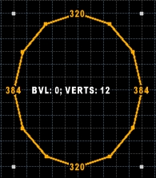
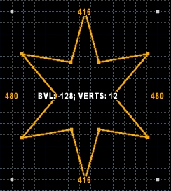

This mode lets you draw various ellipsoid shapes.
Found in: Preferences -> Controls -> Drawing.
Default key: Ctrl-Alt-D.
Additional actions: Increase Sudivision Level, Decrease Sudivision Level.
You can activate this mode by pressing Alt-Shift-D (default key).
If you bind keys to "Increase / Decrease Sudivision Level" actions in Preferences -> Controls -> Drawing, you can use them to control the number of sides ellipse has:

Negative bevel values are also supported:

Bevel ammount is based on current grid size.
NOTE: I suggest you bind these actions to Ctrl+ScrollUp/ScrollDown, Shift+ScrollUp/ScrollDown or something similar. I can't bind default shortcuts for these actions to these keys, because they are already used in Visual Modes.